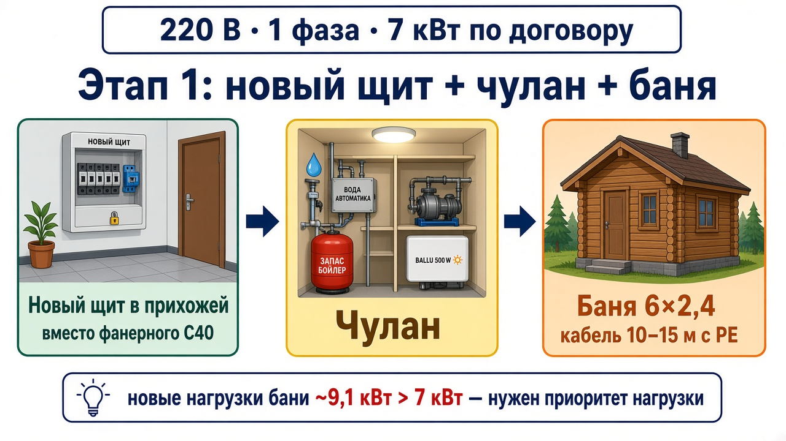
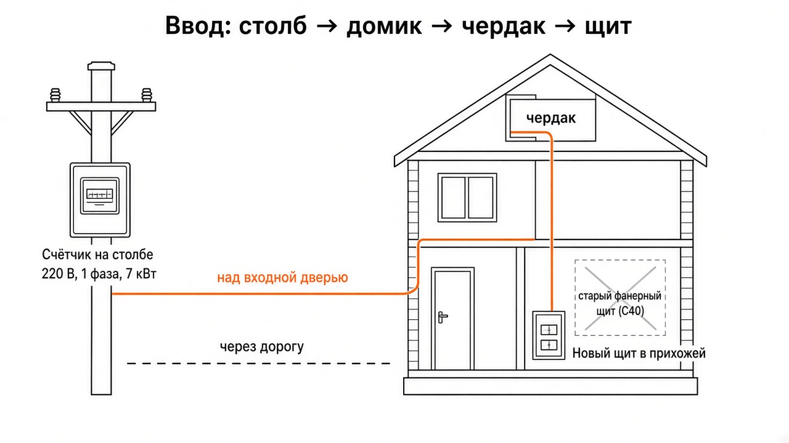
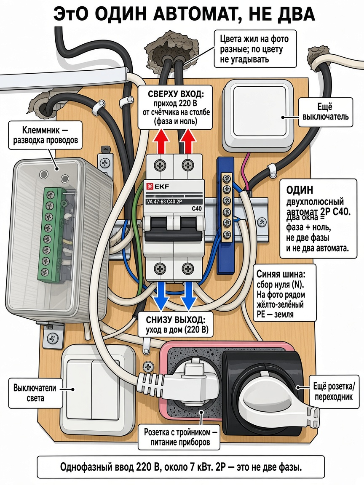
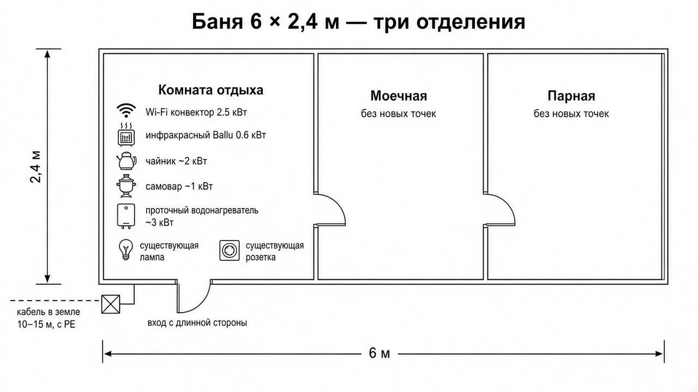

Хотелки хозяина · не проект
Этап 1: новый щит, чулан и баня
Одна фаза 220 В. По договору 7 кВт. Это не смета и не однолинейка — список желаний и фактов. Номиналы автоматов групп не заданы.

1. Что это за документ
Это хотелки хозяина сада: что есть сейчас и что нужно сделать в первую очередь. Нормы и марки кабеля сверх уже сказанного — на усмотрение электрика.
Что уже согласовано
- Сеть: 220 В, одна фаза. По договору 7 кВт.
- Этап 1 подробно: новый щиток + чулан + баня.
- Дальше коротко: комната домика; прихожая / камеры / улица.
- Новый щит ставить в прихожей, не оставлять фанерный щит в комнате.
- PE (земля) частично уже есть — надо проверить и дотянуть, где дырки.
- Автоматы групп не придумывать в этом тексте. Есть только факт: сейчас стоит EKF C40 2P на вводе щита.
2. Ввод: столб, кабель, домик
Счётчик висит на столбе через дорогу. Кабель идёт так: столб → над входной дверью домика → чердак → вниз к щиту. Новый щит должен оказаться в прихожей; трасса сверху (чердак → вниз) сохраняется по смыслу.

| Что | Как есть / как надо |
|---|---|
| Напряжение | 220 В, одна фаза (не три фазы) |
| Мощность по договору | 7 кВт |
| Счётчик | На столбе, через дорогу от участка |
| Кабель до домика | Столб → над входной дверью → чердак → вниз к щиту |
| Куда ставить новый щит | Прихожая |
| Куда не оставлять старый | Комната, фанерный щит |
3. Сейчас: фанерный щит, замена
В комнате стоит фанерный щит: автомат EKF C40 двухполюсный (фаза + ноль в одном корпусе — это один автомат, не «два автомата»). Рядом клеммник, шина нуля, розетка/переходник, выключатели. PE есть не везде. Этот щит заменить новым и повесить его в прихожей.

Что просим по новому щиту (без номиналов групп)
4. Этап 1 — чулан
Чулан питается от нового щита в прихожей. Сечения и автоматы чулана не назначаем заранее. Насос и вода — влажное/ответственное. Выключатель света именно в прихожей — это удобство, не забыть.
| Точка | Комментарий |
|---|---|
| Свет LED | Выключатель — в прихожей, не в чулане |
| ×3 вода / автоматика | Три точки под автоматику воды (как решит электрик: розетки или выводы) |
| Насос | Отдельная точка под насос |
| Резерв бойлера | Точка про запас, бойлер могут поставить позже |
| ×2 универсал | Две обычные универсальные розетки |
| Ballu 500 Вт | Обогреватель 0,5 кВт — точка в чулане |
Чеклист чулана
5. Этап 1 — баня
Баня 6 × 2,4 м. Три отделения подряд: комната отдыха → моечная → парная. Вход с длинной стороны (в комнату отдыха). Питание: кабель в земле 10–15 м, с PE, от домика/нового щита.

Новые точки — только комната отдыха
| Что | Ориентир по мощности | Заметка |
|---|---|---|
| Конвектор Wi-Fi | 2,5 кВт | Новая точка |
| Ballu BIH-APL-0.6-M | 0,6 кВт | ИК, модель названа |
| Чайник | ~2 кВт | Розетка |
| Самовар | ~1 кВт | Розетка |
| Проточник | ~3 кВт | Новая точка |
| Штатный свет + розетка | как есть | Отдельная линия 1,5 мм² — не смешивать с новыми мощными |
| Моечная | — | Без новых точек |
| Парная | — | Без новых точек |
Сумма новых ориентиров: 2,5 + 0,6 + 2 + 1 + 3 = ~9,1 кВт. Плюс штатный свет/розетка. Плюс дом и чулан. Договор — 7 кВт.
Чеклист бани
6. Приоритет нагрузки
Черновой смысл приоритета (обсудить на месте)
- Тяжёлые: конвектор 2,5 кВт и проточник ~3 кВт — лучше не вместе, если ещё что-то греется в доме.
- Средние: чайник ~2 и самовар ~1 — коротко по времени, но в сумме с конвектором уже тесно.
- Лёгкие: Ballu 0,6 кВт и свет — почти всегда можно.
- Чулан: Ballu 500 Вт и насос обычно слабее бани, но насос не должен садиться в момент пика, если от него вода.
- Цифры — ориентиры хозяина, не паспортные замеры. Электрик может уточнить по шильдикам.
7. Этапы 2 и дальше коротко
Это не этап 1. В новом щите просто оставить место и понять трассы, чтобы потом не долбить дважды. Детальных списков точек по комнате, камерам и улице нет — это следующие заходы.
| Позже | Коротко |
|---|---|
| Комната домика | Нормальный свет и розетки вместо того, что кормилось от фанерного щита и тройников |
| Прихожая | Свет, розетки у входа; здесь же новый щит — сразу продумать аккуратно |
| Камеры | Питание и, если нужно, слаботочка. Место в щите / отдельный блок |
| Улица | Фонари, розетка снаружи — по факту, когда дойдут руки |
8. Что сделать электрику на выезде
Картинки — подсказка глазу, текст — источник правды. Галочки хранятся в браузере этого устройства (localStorage), на сервер не уходят.